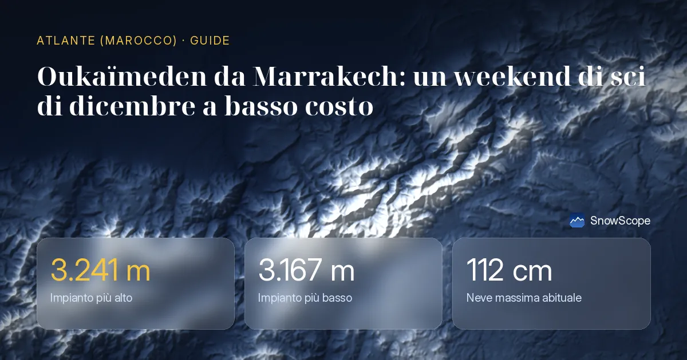

Oukaïmeden da Marrakech: un weekend di sci di dicembre a basso costo
Oukaïmeden si trova a 50 km da Marrakech in linea d'aria—abbastanza vicino per un weekend, abbastanza alto da mantenere la neve quando la città è torrida. Ma dicembre è una scommessa: un mese a metà dicembre tipico porta solo 16 cm a mezza montagna, quindi devi seguire la neve fresca, non la data.
Le previsioni neve in tempo reale per Oukaimden ski resort nell'app SnowScopeAltezza neve, allerte powder e mappa 3D, gratis.
Perché l'altitudine conta, e perché non conta
La stazione si estende da 2600 m alla base a 3258 m in vetta. Ti aspetteresti che la cima sia molto più nevosa dei pendii inferiori, ma dicembre nell'Atlante non segue questa regola. Il 15 dicembre, un inverno tipico dà 15 cm alla base, 16 cm a mezza montagna (2929 m) e 17 cm in vetta. La differenza è a malapena un centimetro.
Questo accade perché le tempeste contano molto più dei metri. La neve cade su tutta la montagna in una volta, poi si scioglie insieme tra gli eventi. All'inizio della stagione, il sole e il vento spogliano i pendii inferiori più velocemente, così le zone medie e superiori rimangono vicine in profondità. Solo da gennaio in poi l'altitudine crea un vero divario.

La prima settimana di dicembre: una scommessa scarsa
Il 1º dicembre, a mezza montagna di solito ci sono 12 cm. Sembra un inizio, ma il 28 % degli inverni è quasi spoglio—meno di 5 cm—in quella data. Solo il 4 % degli inverni ha costruito una base di 50 cm entro la prima settimana di dicembre. Se hai un weekend libero a inizio dicembre, la montagna è bella da camminare (porta vestiti caldi e stivali), ma lo sci è una lotteria.
La prima neve duratura arriva tipicamente intorno al 5 novembre, ma la neve di novembre spesso scompare entro giorni. Pianifica una gita a dicembre solo se puoi aspettare una previsione di neve fresca e partire entro due o tre giorni.

Da metà dicembre a Natale: le probabilità migliorano
Entro il 15 dicembre, la profondità della neve a mezza montagna sale a 16 cm in un inverno medio. Più importante ancora, il 43 % degli inverni ora ha 25 cm o più—il doppio della quota dell'1º dicembre. Il giorno di Natale vede 20 cm tipici, e il 41 % degli inverni supera la linea dei 25 cm.
Anche così, il 20 % di dicembre è ancora quasi spoglio il 15. Solo l'11 % degli inverni ha una base propria di 50 cm entro la metà di dicembre a mezza montagna. Ciò accade all'incirca una volta ogni dieci inverni.
San Silvestro: la tua data più sicura
Entro il 31 dicembre, la profondità tipica raggiunge 24 cm a mezza montagna, e metà di tutti gli inverni ha superato i 25 cm. In vetta (3258 m), il 20 % degli inverni ha costruito 50 cm entro il capodanno, rispetto a solo il 15 % a mezza montagna. Se devi scegliere una data a dicembre, San Silvestro è statisticamente la tua migliore chance.
Ancora, nessuna settimana di dicembre è garantita. Un unico buon weekend dopo una tempesta batte un'intera settimana di speranza.
La visione a lungo termine: dicembre non è cambiato
Nel corso di quattro decenni, dicembre è rimasto imprevedibile. La neve a mezza montagna il 15 dicembre ha fatto una media di 14 cm negli inverni 1980–81 a 1994–95 e 11 cm negli inverni 2011–12 a 2025–26. In entrambi i periodi, circa il 40 % degli inverni ha raggiunto 25 cm a metà mese. Dicembre ora è sottile e variabile come lo era quarant'anni fa.
Entro marzo, il quadro cambia: la neve raggiunge il picco allora, con 53 cm tipici a mezza montagna e 58 cm in vetta. Se dicembre non riesce, anticipare la tua gita a fine febbraio o marzo significa probabilità molto più alte di neve profonda.
Logistica e cosa portare
I biglietti per gli impianti e il noleggio attrezzatura si risolvono sul posto—non c'è un tariffario ufficiale online. Chiedi ai locali o al tuo alloggio i prezzi prima di impegnarti. Il trasporto da Marrakech e una notte in montagna di solito costituiscono la maggior parte del tuo budget.
Porta strati caldi, stivali da camminata (la montagna vale la pena visitare anche senza neve), e una torcia frontale se guidi al buio. La strada di montagna richiede attenzione, specialmente dopo una tempesta. Controlla le condizioni della strada prima di partire da Marrakech, e guida lentamente.
Consigli per sciatori
- Guarda la previsione di neve nell'Atlante, poi parti entro due o tre giorni da una tempesta. Quella singola finestra è più affidabile di qualsiasi data del calendario.
- Se inizio dicembre è spoglio, non disperare: cammina nell'alto terreno, goditi le viste, e pianifica di tornare a fine febbraio o marzo quando la neve è più profonda.
- Nel viaggio da Marrakech, parti presto per raggiungere la montagna alla luce del giorno. Le strade di montagna sono ripide e strette, e la visibilità cala rapidamente dopo il tramonto.
- Porta vestiti caldi anche se la neve è sottile: il vento è forte sopra i 2600 m, e puoi congelare rapidamente una volta che il sole scende sotto i crinali.
- Prima di noleggiare sci o uno snowboard, chiedi il prezzo in loco—non c'è un tariffario ufficiale da confrontare online.
Su questi numeri
Le altezze neve delle località sono la neve più alta sui pendii superiori alla data indicata; sono stime per un'area, non una misura in un punto. Le previsioni possono cambiare. Leggi sempre il bollettino valanghe ufficiale prima del fuoripista.
Cita questo articolo
Per ricerca, didattica o stampa: numeri e grafici sono liberamente riutilizzabili con licenza CC BY 4.0 citando così.
SnowScope (2026), Oukaïmeden da Marrakech: un weekend di sci di dicembre a basso costo, https://snowscope.app/blog/it/2026/11/oukaimeden-depuis-marrakech-week-end-ski-decembre-budget.html, consultato il 2026-11-14
SnowScope (Atlas Labs). (2026, November 14). Oukaïmeden da Marrakech: un weekend di sci di dicembre a basso costo. SnowScope snow reports. https://snowscope.app/blog/it/2026/11/oukaimeden-depuis-marrakech-week-end-ski-decembre-budget.html
BibTeX
@misc{snowscope2026oukaimedendepuismarrakec,
author = {{SnowScope (Atlas Labs)}},
title = {Oukaïmeden da Marrakech: un weekend di sci di dicembre a basso costo},
year = {2026},
month = nov,
howpublished = {\url{https://snowscope.app/blog/it/2026/11/oukaimeden-depuis-marrakech-week-end-ski-decembre-budget.html}},
note = {Published 2026-11-14 13:29 UTC; accessed 2026-11-14}
}· CC BY 4.0 · Metodi, dati e strumenti →
Oukaimden ski resort: neve e temperatura per quota, quest'inverno vs lo scorso (strumenti) →
Segui Oukaimden ski resort
Gratis: un messaggio quando arriva la neve e il meteo ogni mattina.
Altri bollettini neve

Un taccuino pratico su Oukaïmeden, nell'Alto Atlante: quando arriva di solito la neve, quanta, quali pendii scegliere e come arrivare da Marrakech.

Nessuna neve ancora a Oukaïmeden il 12 novembre. Le vette dell'Atlante restano libere; la stagione invernale raggiunge il picco tipicamente a marzo con 58 cm in quota.